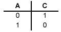
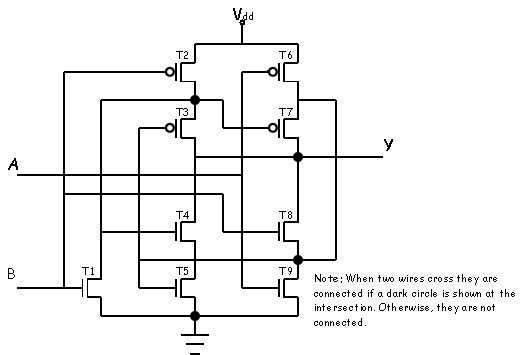
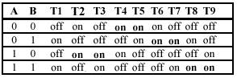

Problem 5.
Anna Logue, a circuit designer who missed several early 6.004
lectures, is struggling to design her first CMOS logic gate. She has
implemented the following circuit:

Anna has fabricated 100 test chips containing this circuit, and has a
simple testing circuit which allows her to try out her proposed gate
statically for various combinations of the A and B inputs. She has
burned out 97 of her chips, and needs your help before destroying the
remaining three. She is certain she is applying only valid input
voltages, and expects to find a valid output at terminal C. Anna also
keeps noticing a very faint smell of smoke.
-
What is burning out Anna's test chips? Give a specific scenario,
including input values together with a description of the failure
scenario. For what input combinations will this failure occur?

The chips are burning out when the pulldown and pullup are both
active. This will occur when A=0, B=1 or when A=1, B=0.
-
Are there input combinations for which Anna can expect a valid output at C? Explain.
Yes, if A=1 and B=1, then C=0. Or if A=0 and B=0, then C=1
-
One of Anna's test chips has failed by burning out the pullup
connected to A as well as the pulldown connected to B. Each of the
burned out FETs appears as an open circuit, but the rest of the
circuit remains functional. Can the resulting circuit be used as a
combinational device whose two inputs are A and B?
Explain its behavior for each combination of
valid inputs.
No. When A=1 and B=0, the circuit will burn out again, since the pullup
and pulldown will be active, thus burning out the circuit. Also, the
output is not defined when A=0 and B=1, since neither the pullup or
pulldown are active.
-
In order to salvage her remaining three chips, Anna connects the A and
B inputs of each and tries to use it as a single-input gate. Can the
result be used as a single-input combinational device? Explain.
Yes. Since A=B, we are left with the following function (an inverter):

Problem 6.
Occasionally you will come across a CMOS circuit where the
complementary nature of the n-channel pull-downs and p-channel
pull-ups are not obvious, as in the circuit shown below:

-
Construct a table that gives the on-off status of each transistor in
the circuit above for all combinations of inputs A and B.

-
Compute the output, Y, for each input combination and describe the
function of the above circuit.
The output Y is connected to four pairs of transistors in series,
so each of these pairs can affect the output.
when A=0 and B=0, transistors T4 and T5 are on, so Y=0
when A=0 and B=1, transistors T6 and T7 are on, so Y=1
when A=1 and B=0, transistors T2 and T3 are on, so Y=1
when A=1 and B=1, transistors T8 and T9 are on, so Y=0
Putting this together, we conclude that Y = XOR(A,B).
Problem 7.
In lecture there was a brief overview of the
CMOS fabrication process.
-
What keeps the source/drain diffusions of a
MOSFET from shorting out to the substrate or to
each other?
The source/drain diffusions are embedded in a substrate
lightly doped to be of the opposite type. For example,
NFETs have N-type source/drain diffusions embedded in
a P-type substrate. A PN junction forms "automatically"
where the source/drain diffusions and substrate come
into contact. The designer of the circuit connects the
substrate to the appropriate power supply rail (eg, GND
or VDD) so as to guarantee that the PN junction is reverse-biased
at all times. "Reverse-biased" means that
VP-VN <= 0V. When the
PN junction is reverse-biased, no current will flow across
the boundary.
In the case of an NFET, the P-type substrate
is tied to GND (VP = 0), so even though the diffusion voltage
VN may anywhere between OV and VDD,
VP-VN <= 0V.
-
Why does reducing the thickness of the thin oxide
layer improve the performance of the mosfets?
An inversion layer (aka, the "channel") is formed in a FET when
the gate voltage exceeds the threshold voltage of the device.
The inverted channel conducts current between the source and
drain diffusion. The depth of the channel and the strength of
the inversion are proportional to the electric field generated
by charges on the gate terminal -- the electric field is stronger
if the gate terminal is brought closer to the channel by
making the thin oxide thinner.
-
Why is silicon dioxide (SiO2) deposited right before
a new wiring layer is added to the surface of the
wafer?
Silicon dioxide is an insulator, so by depositing it on the
wafer we ensure that the new wiring layer is electrically
isolated from the circuitry underneath.
-
How are connections between the wiring layers made?
Connections are made by etching holes in the insulating silicon
dioxide layer before depositing and patterning a wiring layer.
The wire material fills the holes making connections to the
underlying circuitry. In most modern processes, the holes are actually
filled with tungsten, while the interconnect is formed from
aluminum or copper.
-
If one wanted to increase IDS for a
NFET, how should it's dimensions be changed?
IDS for a NFET is portional to W/L where
W is its width and L its length. So to increase IDS
one should increase the NFET's width or decrease its length.
Except in unusual circumstances, FETs are usually constructed
using the minimum channel length allowed by the process, so
decreasing the channel length is not an option.
-
Suppose there are two mosfets of width W and length L
connected in parallel, i.e., all their terminal connections
are identical. Given that IDS of a mosfet
is proportional to W/L, what would be the appropriate
dimensions for a single mosfet that would have the
same IDS as the pair connected in parallel?
To first order, doubling the width of a mosfet will
double its IDS, so a single mosfet of
of width 2W and length L would have the same IDS
as the pair connected in parallel.


 indicates problems that have been selected for discussion
in section, time permitting.
indicates problems that have been selected for discussion
in section, time permitting.